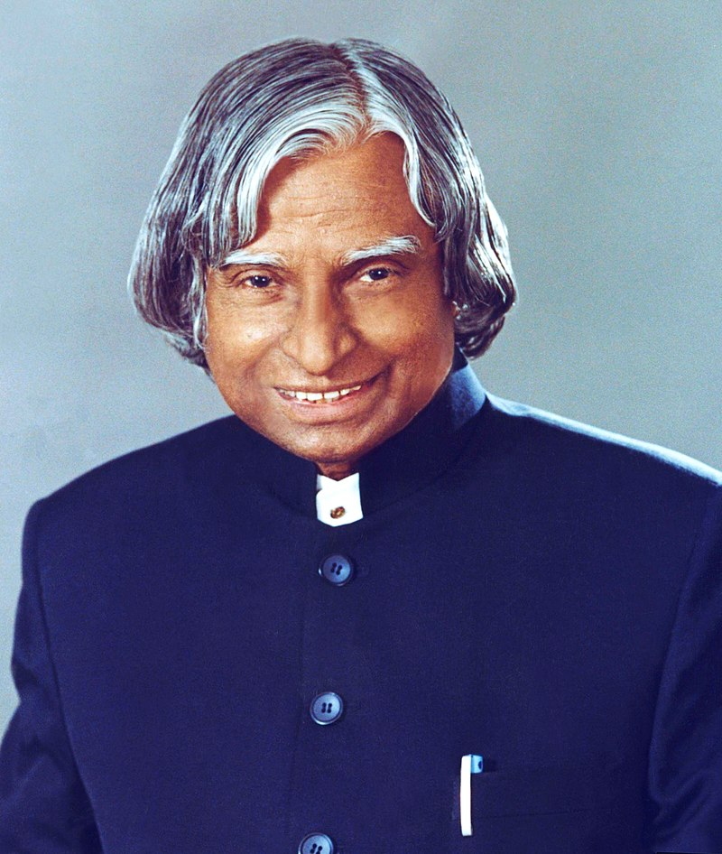

Albert Einstein was a German-born theoretical physicist best known for developing the theory of relativity. Einstein also made important contributions to quantum mechanics. His mass-energy equivalence formula E = mc², which arises from special relativity, has been called "the world's most famous equation".

Avul Pakir Jainulabdeen Abdul Kalam BR was an Indian aerospace scientist and statesman who served as the 11th president of India from 2002 to 2007. Born and raised in a Muslim family in Rameswaram, Tamil Nadu, he studied physics and aerospace engineering.
